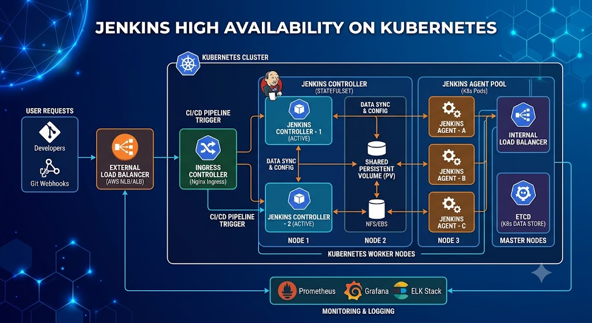
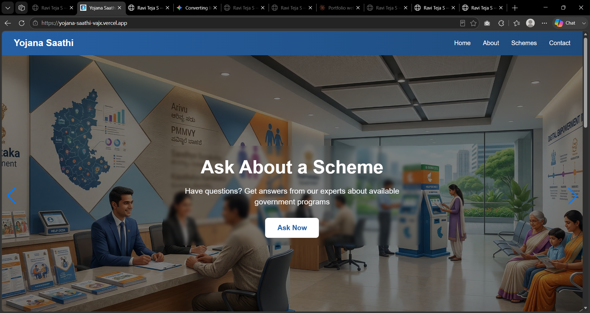
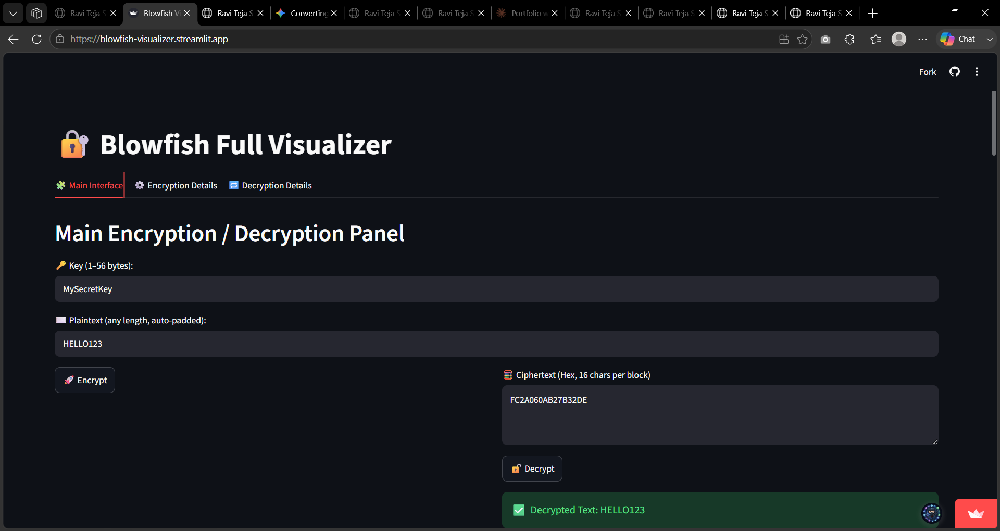
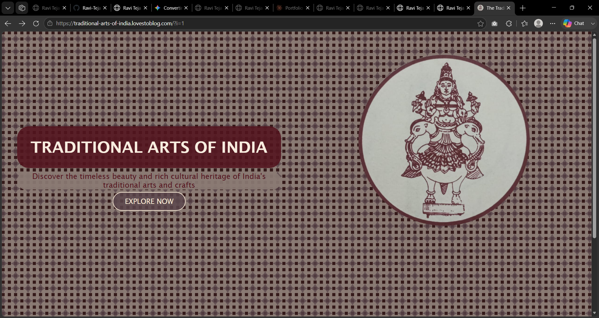

_____ _______ ____ _____
| __ \ |_______| / __ \ / ____|
| |__) )| |__ | | | || (___
| _ / | __| | | | | \___ \
| | | | | |__| | ____) |
|_| |_| \____/ |_____/
=================================
Final-year engineering student, currently interning at HPE, where I design high-availability infrastructure for Jenkins on Kubernetes — leader election, failover, the parts that keep a CI/CD system alive when a node doesn't.
Outside that I build ML pipelines and small products end to end: a scheme-matching assistant for government benefits, a hotspot model for parking violations, a visualizer that makes an encryption algorithm easy to watch happen.




I'm Ravi Teja S, studying Information Science & Engineering at BMS College of Engineering, graduating 2027.
I'm equally happy two layers down in a Kubernetes cluster or two layers up in a product's UI — HPE has me deep in leader election and failover right now, and outside work I keep building smaller things: an AI assistant for government schemes, a parking-violation model trained on Bengaluru data, a from-scratch encryption visualizer. I like problems where the constraint is real and the fix has to actually hold.